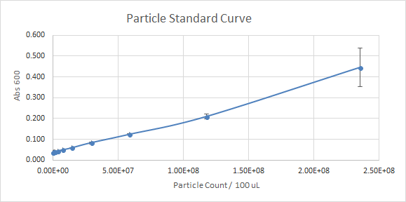
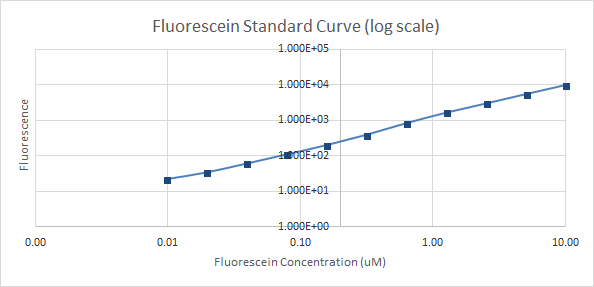

Measuring Fluorescence of GFP of transformed Escherichia Coli DH5 ùû™ Cells
Objective
The objective of this experiment to standardize fluorescent measurements using data collected from various teams in different labs across the world. This is done by preparing competent E.coli K-12 DH5-alpha cells, and transform them with 6 different plasmids. The transformed cells are then used to obtain two different cell measurements of the absorbance at 600 nm with a time interval of six hours after diluting the cultures to an absorbance Abs600 of 0.02. The data generated is then used to obtain measurement for the fluorescence of each of the six plasmids used.
Experimental Conditions
A) Calibration step:
1. Calibration 1:OD600 Reference Point
100 µl of the LUDOX was added to four different wells on a 96-well plate, and the same was done in four different wells with ddH20. The absorbance at 600 nm of the 8 wells was then measured. The mean if the four replicates was then calculated and the corrected Abs600 value was obtained by subtracting the mean value for ddH2O from the mean value for LUDOX. The reference OD600 of 100 µl was measured using a spectrophotometer.
2. Calibration 2: Particle Standard Curve
A microsphere stock solution was prepared, by adding 96 µl microspheres into an eppendorf tube after vortexing it for 30 seconds, along with 904 µl of ddH2O. The stock solution was then vortexed. In a 96-well plate, 100 µl of ddH2O was added to each of the wells in columns 2 to 12. 200 µl of the stock microsphere solution prepared was then added into each well in column 1 of the 96-well plate. 100 µl was taken from each well in column one and transferred into the adjacent well in column 2, and so on until column 11. 100 µl was taken from the wells in column 11 and discarded. Wells in column 12 contained only 100 µl of ddH2O. The mixtures were pipetted up and down in between steps. This was done for 4 rows: A, B, C and D. The absorbance at 600 nm of each of the samples was then measured and used to generate a standard curve shown in figure 1 below.
3. Calibration 3: Fluorescence Standard Curve
The fluorescein provided in the kit was resuspended in 1 ml of 1X PBS buffer to prepare a 10X fluorescein solution. The mixture was then pipetted up and down until it became clear. The 10X fluorescein solution was then diluted to 1X by adding 10 µl in addition to 900 µl of 1X PBS buffer. Rows A, B, C and D from Columns 1 to 12 were used from a 96 well plate. 100 µl of PBS buffer was added to the wells in columns 2 to 12. 200 µl of the 1X stock solution was added into the four wells in column 1. 100 µl of the solution in column 1 was transferred into column 2. The mixture was then pipetted up and down to mix it then the process was repeated until column 11, the 100 µl taken from column 11 was discarded as waste. Column 12 was left to contain only PBS buffer. The fluorescence was then measured for each of the wells and the results were used to plot a standard fluorescence curve which is shown in figure 3 and 4.
B) Competent Cell Preparation:
In order to prepare competent cells, needed later for the transformation step, 1 ml of an overnight culture of E.coli K-12 DH5-alpha cells were diluted by adding 30 ml of Luria-Bertani broth in a falcon tube. The tube was incubated at 37℃ with shaking. Samples of the solution were taken at after the first 45 minutes and then 30 minutes later to measure the absorbance using a spectrophotometer. The tube was taken out of the incubator when the absorbance measurement at 590 nm was equivalent to 0.375 OD, and placed on ice for 10 minutes. After that, the cells were centrifuged for 10 minutes at a speed of 8000 rpm, at 4℃. 300 ml of a 50 mM calcium chloride solution was prepared by dissolving 2.205g of calcium chloride dihydrate (CaCl2.(H2O)2) in double distilled water (ddH2O). The supernatant was discarded and the pellet suspended in 10 ml of 50 mM cold calcium chloride. The solution was then centrifuged again at 4℃ at 8000 rpm. The supernatant was discarded again and the pellet resuspended in 10 ml of cold 50 mM CaCl2. The solution was then placed on ice for 20 minutes. It was then centrifuged for 10 minutes at 4℃ and with a speed of 8000 rpm. 15 ml of a 50 ml CaCl2 solution containing 15% glycerol was prepared by adding 2.25 ml of glycerol to 12.75 ml of the 50 ml CaCl2 solution previously prepared. After centrifuging, the supernatant was discarded for the last time and 2.5 ml of the 50 ml CaCl2 solution containing 15% glycerol prepared was added and used to resuspend the pellet. The cells were then stored at 4℃ for 24 hours, then distributed into 100 µl centrifuge tubes and stored at -20℃ until they were used in the transformation step of the experiment.
C) Transformation Day 1:
The competent E.coli K-12 DH5-alpha cells prepared were then transformed using the provided Test Devices 1 to 6. On day 1 of the cell measurement component of the experiment, May 29th, 8 tubes 100 µl containing the previously prepared competent cells were taken out of the -20℃ refrigerator and left on ice for 15 minutes to thaw. 10 µl of competent cells were then pipetted into 8 separate 2 ml centrifuge tubes that were pre-chilled by being kept on ice. 1 µl of DNA from the corresponding well on kit plate 7 was then pipetted into each of the 8 tubes. Two of the tubes acted as the controls, while the remaining six contained different plasmids. The labels on the 8 tubes along with the location of the DNA added to each on the plate kit are shown below in Table 1.
The tubes were then mixed gently by flicking the, while keeping them on ice. They were then closed and incubated on ice for 30 minutes. After that, the tubes were placed in a 42 ℃ water bath for 1 minutes to expose the cells to a heat shock, after which they were placed on ice for 5 minutes. 500 µl of LB broth were then pipetted into each of the 8 tubes, and all of the tubes were incubated for 1 hour at 37 ℃ in a shaker. After the tubes were removed from the incubator, the now transformed cells were plated on agar plates. 50 µl of each tube was pipetted onto an agar plate, then spread using a sterilized spreader. After that, each tube was centrifuged for 1 minute at 1300 rpm, and 350 µl of supernatant were discarded before resuspending the pellet in the remaining 100 µl of solution. 50 µl from each tube were then used to plate another set of agar plates after the solution had been concentrated. The 16 plates, two from each of the 8 samples, were then placed upside down in an incubator set at 37℃ and left for 18 hours.
D) Inoculation of 2 Colonies Day 2:
The next day, on May 30th, the plates were removed from the incubator. The plates that contained colonies were then stored at -4℃ in the refrigerator. As the transformation with Test Device Six was not successful and the plates for that device contained no colonies, the transformation for this plasmid was repeated with the same technique used earlier on Sunday June 3rd. The next day, after colonies for device 6 were obtained, the innoculation for each of the 8 transformations was performed. This was done by pipetting 5 µl of LB broth into 16 different falcon tubes and adding one colony to each tube. Two different colonies were taken from each transformed device and from the two controls. The cultures were left overnight for 16 hours to grow in a shaker at 37℃ and 220 rpm.
E) Cell Growth, Sampling and Assay Day 3:
After 16 hours, the 16 falcon tubes containing the cultures were each diluted by 10 times by adding 0.5 ml of each of culture to 4.5 ml of Lb broth with Chloramphenicol. The absorbance of each of these dilutions was measured at a wavelength of 600 nm. The cultures were diluted further using LB with chloramphenicol until the absorbance reached 0.02. 500 µl of the diluted cultures were placed into eppendorf tubes at hour 0, before the incubation. The remainder of the dilutions were then incubated for 6 hours at 37℃ and 220 rpm. After the 6 hour incubation period, another 500 µl were added to eppendorf tubes from each culture. All the samples, 32 in total, taken at hours 0 and 6, were placed on ice.
In a 96 well plate, 100 µl of each samples was added four times, creating four replicates. In other words, each of the 16 samples for each of the two time points had four replicates, making for 64 tubes per time period. A different 96 well plate was used for each time period each of them containing 64 samples. The absorbance at 600 nm and the fluorescence were measured for each of the samples.
F) Cell Forming Units (CFU) per 0.1 OD600 E. Coli Cultures:
2 overnight cultures of the positive control cultures (BBa_I20270), as well as 2 overnight cultures of the negative control cultures (BBa_R0040) were prepared, and diluted by a factor of 8 using LB broth containing cam. This was done by adding 25 µl of each culture to 175 µl of LB + Cam, in a 96-well plate. In all, 6 wells were used, 2 for the positive control, two for the negative control and 2 for the blank media for which 200 µl of LB+Cam was added. The initial concentrations were measured and calculated by subtracting the blank from the obtained concentration and multiplying the result ny 8 The final volumes of each culture needed to obtain a final concentration 0.1 OD600 was then calculated using the formula (C1)(V1)=(C2)(V2). Three dilutions were prepared for each culture in the 96-well plate, giving a total of 12 dilutions, 6 for the positive control and 6 for the negative control.
For each of the 12 prepared starting samples, 5 dilutions were prepared, yielding a total of 60 dilutions. 1900 µl of LB+Cam were added to dilutions 1,2 and 3 in 2 ml tubes, while 900 µl of LB+Cam were added to dilutions 4 and 5. 100 µl of each starting material into the dilution 1 tube, then 100µl of dilution 1 was added to dilutions 2 and so on. The tubes were vortexed for 10 seconds in between.
100 µl of dilutions 3, 4 and 5 were plated on LB+Cam plates for each of the 4 colonies. The plates were then incubated at 37℃ for 18 hours, then the number of colonies per plate were counted. The final dilution factors of plates obtained from dilutions 3 was 8*10^4, while for dilution 4 plates it was 8*10^5 and for dilution 5 plates it was 8*10^6.
To obtain the CFU/ml count, the number of colonies per plate, for plates with less than 300 colonies, was multiplies by the dilution factor of each plate. The results are shown in table 5 below.
Results and Discussion
A) Cell Forming Units (CFU):
The initial concentrations of the cultures diluted by a factor of 8 were as follows:
The absorbance measurements for the blanks were 0.049 and 0.051. Therefore, 0.05 was subtracted from each measurement.
The amounts of cultures and LB+Cam used to dilute each culture to a concentration of 0.1 OD600 is as follows:
After triplicate dilutions of each of the four colonies were prepared, the absorbance was once again measured to ensure that they were 0.1 OD600. The measurements after subtracting the 0.05 for the blank measurement were as follows:
The number of colonies for each of the 36 plates are shown below in table 5.
B) Calibration 1: OD600 Reference Point:
The cultures were initially diluted by a factor of 8 so that they would be within the range of measurements detected by the plate reader which is 0.05 to 0.5 OD600. Therefore, when doing the calculations how much of the culture was needed to obtain the desired final concentration of 0.1 OD 600, the absorbance measured for the diluted cultures was multiplied by 8 after accounting for the blank measurements by subtracting 0.05. The absorbance of the triplicate dilutions then obtained of each colony was then measured again to ensure that they were 0.1 OD600. As shown in table 4, they were all 0.1 when rounded to one significant figure, which confirmed the fact that the desired final absorbance of the starting samples was obtained.
C) Calibration 2: Particle Standard Curve:

Figure 1. The absorbance at 600 nm (y-axis) versus the particle count per 100 µl (x-axis)

Figure 2. The absorbance at 600 nm (y-axis) versus the particle count per 100 µl (x-axis) on a log scale
D) Calibration 3: Fluorescence Standard Curve:
Figure 3. The fluorescence (y-axis) versus the concentration of Fluorescein in µM (x-axis)

Figure 4. The fluorescence (y-axis) versus the concentration of Fluorescein in µM (x-axis) on a log scale